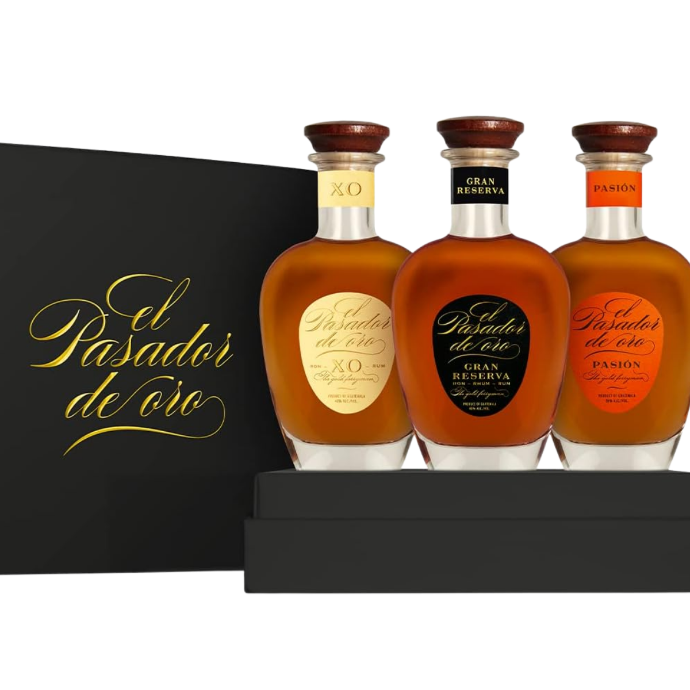
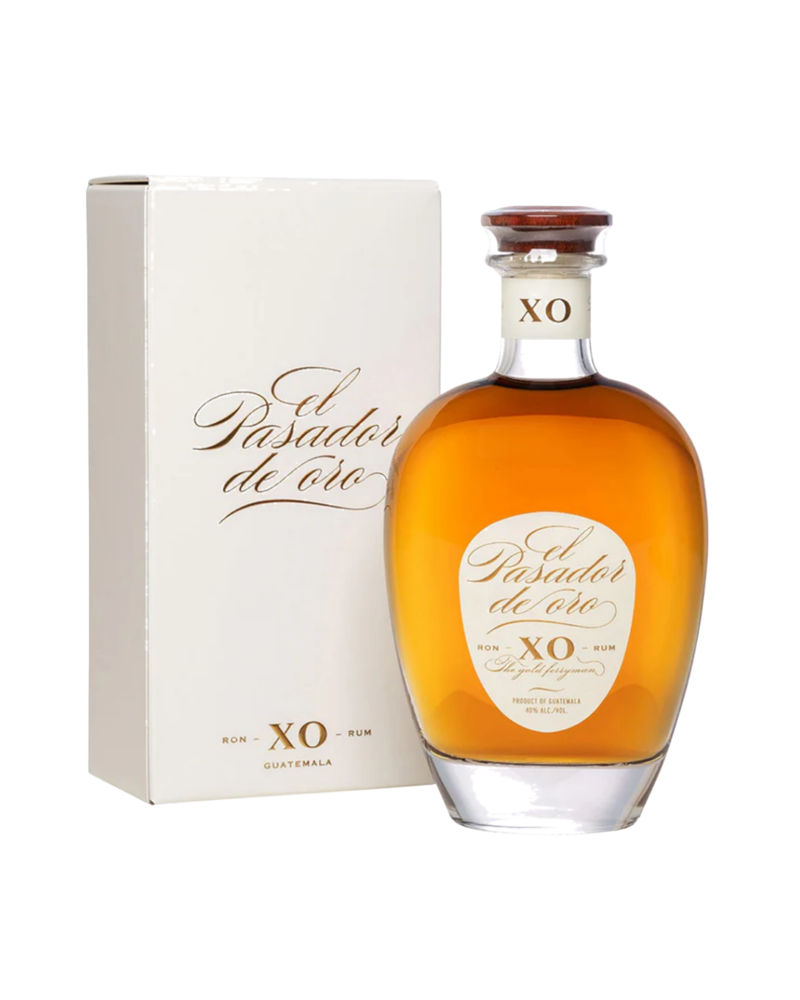
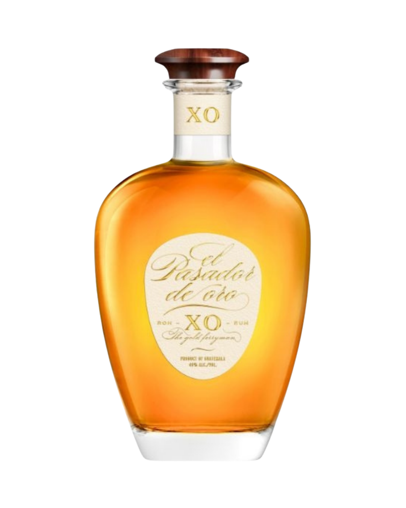
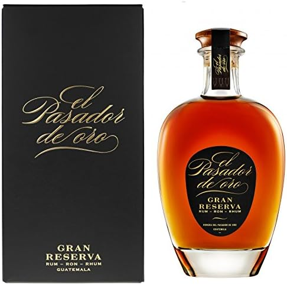
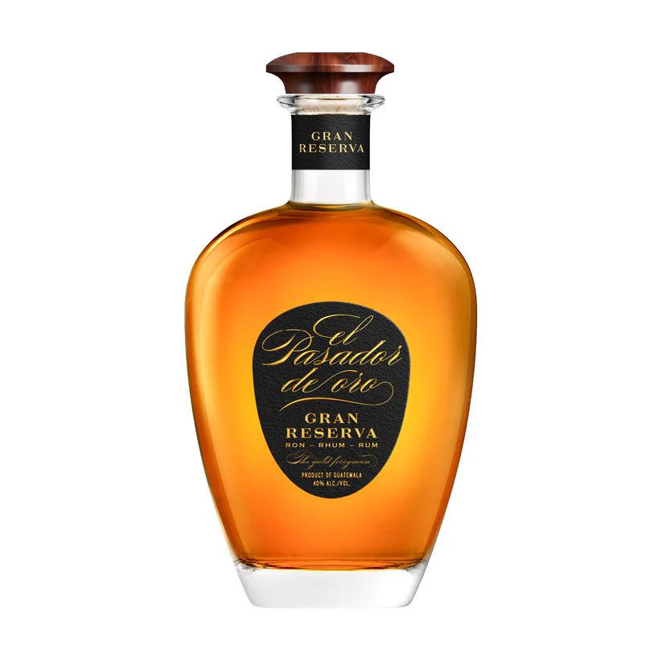
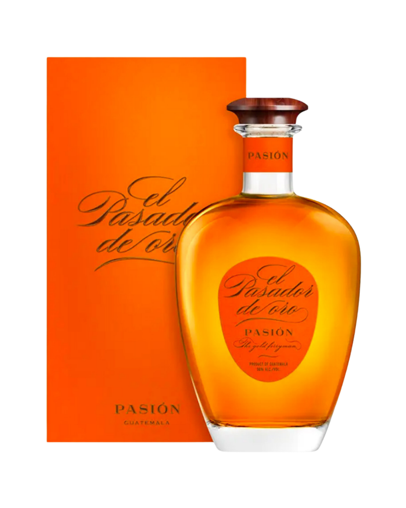
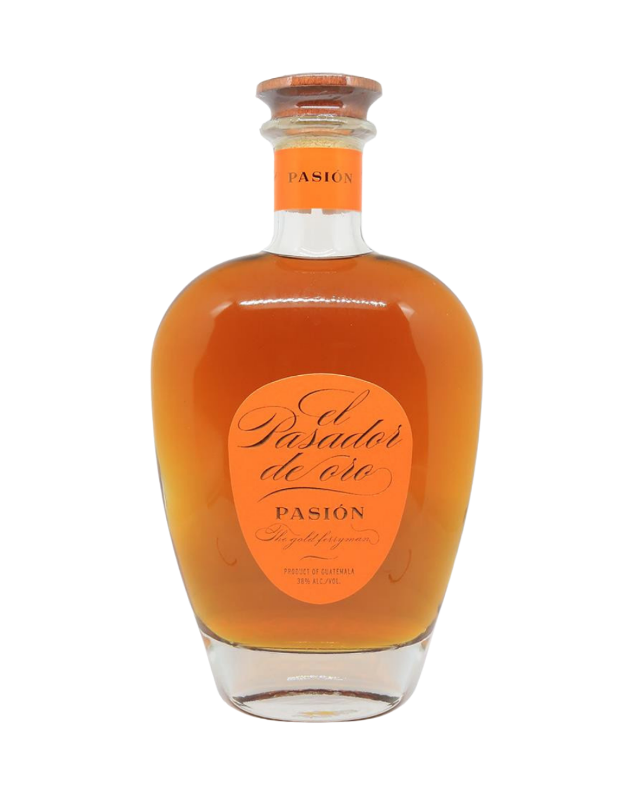

Most Awarded · Fastest-Growing · Solera + Cognac Cask · XO 40% · Pasión 38%

El Pasador de Oro is a premium rum brand produced in Guatemala, a land known for its unique environment suited for sugarcane cultivation and distillation. In less than five years, it has become the fastest-growing brand in the premium rum category and the most awarded one.
The rum is a blend of carefully selected rums, aged via the Solera system in Bourbon oak casks under tropical climate in Guatemala, then finished in old Cognac casks at our distillery near Bercloux, France.
Invented by the Spanish 400 years ago, rums of different ages are blended and stored multiple times to continue maturing.
1 tropical year = 3 European years — wide-open oak pores allow deep wood penetration.
After tropical ageing, final maturation in French Cognac casks adds unique elegance.
Every batch blind-tasted in black glasses against competitors before release.


The only XO at this retail selling price and the only carafe at this price. Comes out top in blind tastings against direct competitors.
Slightly woody — exotic fruit, cinnamon, and cocoa.
Complex, smooth and slightly spicy without being sugary.
Deep and complex notes of caramel.


High-end packaging. Initial aging in Guatemala, final aging in Cognac casks. Top in blind tastings.
Coffee, banana and pineapple. Exceptional bouquet balance.
Sharp and powerful with hints of spices. Smooth, not overly sweet.
Remarkably long.


The best infused rum on the market — made with El Pasador de Oro XO, the world's most awarded rum. Crystal clear, 70 cl guaranteed, with the equivalent of two fresh passion fruits infused per bottle.
Intensely exotic perfume — tropical flavours mingling with suave sweet-spicy aged rum. A lush world of fruity softness.
Like a sea breeze — generous and refreshing. The freshness of passion fruit brings tonic, delicious balance.
Mellow and very long, with concentrated ripe yellow fruit flavours sublimated by brown sugar.